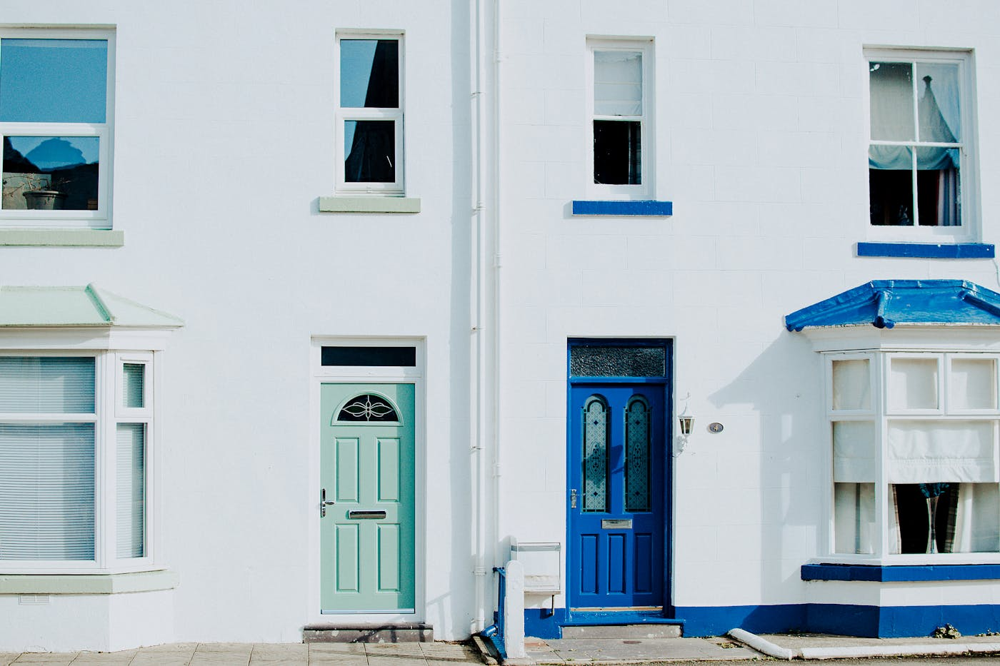
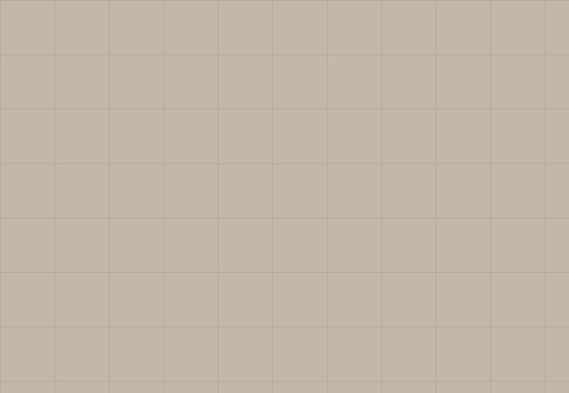
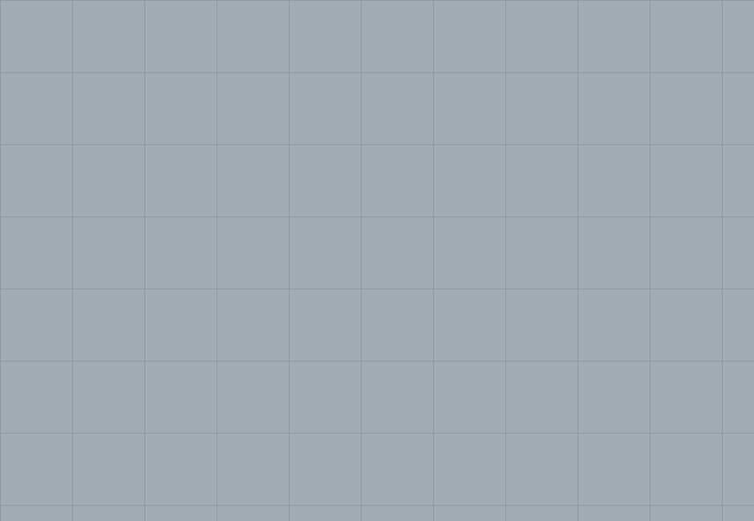

Quick answer: Building a house in Sydney in 2026 costs $2,800–$5,000 per m² for construction, excluding land. A standard 250 m² home runs $700,000–$1.25M to build. Total elapsed time from first meeting to handover is typically 18–24 months — including 3–8 months for planning approval before construction starts. The process runs through 8 defined stages, each triggering a progress payment. Most Sydney blocks go through either a Development Application (DA) or a Complying Development Certificate (CDC) before a single slab is poured.
Grand Designs makes building a house look like a continuous act of personal reinvention — dramatic pauses, structural surprises, one partner who is less convinced than the voiceover suggests, and a tearful handover scene. What the show underrepresents, charmingly, is the Development Application.
[Right. Straight face now.] Here is what building a house in Sydney actually involves in 2026: which builder type suits your site, the 8 construction stages and what each one costs, the approval process, and when building is the wrong call entirely.
- Custom builder vs project builder — which type suits your build
- The 8 stages of building a house in Australia
- How long does it take to build in Sydney?
- What does it cost to build a house in Sydney in 2026?
- Progress payments explained
- DA vs CDC: the NSW approval paths
- NSW government grants for new home builds
- When NOT to build a house
- Questions to ask before you sign a building contract
- FAQ
Custom Builder vs Project Builder — Which Type Suits Your Build
Before any site assessment or design brief, the first real decision is builder type. Not every builder builds the same way, and the choice affects cost, timeline, and what you actually end up with.
Project home builders (volume builders) work from pre-approved plan sets. They have faster council approvals — because the plans are pre-certified — consolidated supplier relationships, and lower per-m² costs because the same plans have been built hundreds of times. They are the right choice for a flat, regular block where your brief closely matches a standard four-bedroom, two-bathroom layout. Expect strong pricing, predictable timelines, and limited flexibility once contracts are signed.
Custom home builders design around your specific site, your brief, and how you live. They manage the full process — engaging a licensed architect or building designer, coordinating engineers and consultants, handling the council approval, and delivering construction under a HIA or MBA contract. The result is a home designed for your block, not a plan adjusted at the margins. The trade-off is higher per-m² cost and a longer pre-construction phase.
For a Sydney block with a difficult setback, a north-facing aspect worth capturing, or a brief that goes beyond the catalogue, a custom builder makes the design investment worthwhile. For a standard block with a standard brief, a project builder is the more efficient path. Our guide to how to choose a custom home builder covers this distinction in depth.

Photo via Pexels
The 8 Stages of Building a House in Australia
NSW construction contracts define progress payments around these stages. Understanding them helps you track the build and anticipate when drawdowns will occur on your construction loan.
| Stage | What happens | Typical duration |
|---|---|---|
| 1. Site preparation | Demolition (if applicable), excavation, service connections | 2–4 weeks |
| 2. Base / slab | Footings, slab poured and cured | 2–4 weeks |
| 3. Frame | Structural timber or steel frame erected, roof frame | 2–4 weeks |
| 4. Lock-up | Roof covering, external cladding, windows, external doors | 4–8 weeks |
| 5. Fixing | Internal linings, plasterboard, kitchen, joinery, tiling | 6–10 weeks |
| 6. Practical completion | Painting, fixtures, flooring, site clean | 4–6 weeks |
| 7. Final inspection | Occupation Certificate issued by certifier | 1–2 weeks |
| 8. Handover | Keys, warranties, O&M documents | 1 week |
Active construction for a single-storey home runs 26–38 weeks on average in Sydney. Double-storey adds 6–10 weeks to stages 3–5. Supply chain delays and weather events in Sydney’s wetter months routinely add 4–8 weeks to these estimates. Build those buffers into your moving plans before you give notice on a rental.
How Long Does It Take to Build a House in Sydney?
The construction stages above describe active building time. What the timeline figures in most guides miss is the pre-construction period — which is where most of the calendar is consumed.
| Phase | Duration |
|---|---|
| Initial brief, site assessment, feasibility | 4–8 weeks |
| Architectural design and documentation | 3–5 months |
| CDC approval (private certifier) | 3–5 weeks |
| DA — metropolitan Sydney councils | 3–6 months |
| Construction — single storey | 9–14 months |
| Construction — double storey | 12–18 months |
For a custom home in Sydney going through a DA, the total elapsed time from first conversation to handover is typically 20–28 months. A project home on a CDC-eligible block can move faster — 14–18 months total is achievable when the site is straightforward and the design is standard.
The DA phase is where timelines become suggestions. Heritage conservation area assessment, neighbour objections, and council information requests can each add months. Your builder or architect can identify these risks before design begins — identifying them after the documentation is complete is considerably more expensive.
What Does It Cost to Build a House in Sydney in 2026?
Construction costs per square metre are the number most often quoted and most often misunderstood. They cover the physical build only — not land, not design fees, not approvals, not the items that accumulate between contract signing and moving day.
| Build type | Cost per m² (construction only) |
|---|---|
| Project home — standard spec | $1,800 – $2,800 |
| Mid-spec custom home | $2,800 – $3,800 |
| Well-specified custom home | $3,800 – $5,000 |
| Architectural / high-spec custom | $5,000 – $6,500+ |
A 250 m² mid-spec custom home in Sydney costs $700,000–$950,000 to construct. Before anything else is added.
What gets added:
- Land (or knockdown of existing structure): $20,000–$60,000 for demolition on a suburban Sydney block
- Architectural and building designer fees: $50,000–$120,000
- Engineering, energy, and surveying consultants: $12,000–$25,000
- Council or CDC fees: $5,000–$30,000
- Section 7.11 infrastructure contributions (varies by council): $10,000–$60,000
- Landscaping, driveways, fencing: $30,000–$80,000
- Finishes and fixtures not in the base contract
All-in on a typical Sydney knockdown-rebuild — land included — the number sits at $1.5M–$2.5M for a well-located 600–700 m² block. That figure surprises people who started with a cost-per-m² calculation. It should not surprise you now.
For construction in the outer western suburbs, our guide to custom home builders in Sydney’s western suburbs covers cost expectations specific to that market. North Shore and Northern Beaches builds carry a premium — see our North Shore builder guide for those figures.

Photo via Pexels
Progress Payments Explained
Under the NSW Home Building Act, residential building contracts over $20,000 must specify progress payments tied to defined construction stages. You do not pay the full amount upfront. Your lender draws down from your construction loan in tranches as each stage is completed and certified.
Standard NSW progress payment schedule:
| Stage | Percentage of contract |
|---|---|
| Deposit | 5–10% |
| Base / slab complete | 10% |
| Frame complete | 15% |
| Lock-up | 35% |
| Fixing | 20% |
| Practical completion | 10–15% |
Before each drawdown, your lender typically requires a progress inspection by an independent valuer. Build this into your timeline — inspections do not always happen the day after a stage is completed, and delays in drawdown approval can affect the builder’s cash flow and programme.
The NSW Home Building Act caps the deposit at 10% of the contract price for contracts over $20,000. A builder asking for more than this upfront is outside the Act’s requirements. Verify contractor licences and insurance at NSW Fair Trading before any money changes hands.
DA vs CDC: The NSW Planning Approval Paths
Every new residential build in NSW requires planning approval before construction starts. Two paths exist.
Complying Development Certificate (CDC): Assessed by a private certifier against the NSW Housing SEPP standards — not by council. If your proposed home meets all the numerical criteria (height, setbacks, floor space ratio, site coverage), a CDC can be issued in approximately 20 business days. The CDC path is faster and more predictable than a DA. Not all sites qualify: heritage-listed properties, flood-affected land, and irregular lots often require a DA instead.
Development Application (DA): Submitted to your local council and assessed by council planners. Required when the design seeks variation from planning controls, the site is heritage-affected, or the lot does not meet Housing SEPP criteria. Timelines vary significantly by council — metropolitan Sydney councils average 3–6 months for standard residential DAs, though complex applications run longer.
Check your lot’s zoning and applicable planning controls on the NSW Planning Portal before briefing a designer. The portal identifies heritage overlays, flood mapping, and minimum lot sizes — all of which affect approval path and timeline.
For suburb-specific approval guidance, see our posts on building in Carlingford (which covers the three-council split in that suburb) and building on the Northern Beaches.
NSW Government Grants for New Home Builds
This section is the one most guides mention but rarely explain clearly. The available incentives in NSW for new builds in 2026:
First Home Owner Grant (FHOG) — NSW: A one-off $10,000 grant for eligible first home buyers building a new home or purchasing an off-the-plan property valued at or under $600,000. Administered by Revenue NSW. Eligibility requires Australian citizenship or permanent residency, no previous home ownership in Australia, and the property must be used as a principal place of residence.
First Home Buyer Assistance Scheme (FHBAS): Provides transfer duty (stamp duty) exemptions or concessions on new home purchases. Eligible new homes under $800,000 attract a full exemption. Properties valued $800,000–$1,000,000 attract a concessional rate. This applies to the land transfer, not the construction contract.
Federal First Home Guarantee: Allows eligible buyers to purchase with a 5% deposit without paying lender’s mortgage insurance. The government guarantees the remaining 15% of the deposit. Available through participating lenders and administered by Housing Australia.
These incentives do not stack without limits — each has specific eligibility criteria, and some interact with each other. A mortgage broker familiar with new builds can model the actual benefit for your situation before you commit to a contract structure.

Photo via Pexels
When NOT to Build a House
This section is the one most guides skip. We are not most guides.
Do not build if your brief is entirely standard. A four-bedroom, two-bathroom home on a flat, regular Sydney block with an open-plan layout and standard finishes is served well by a project builder. They will deliver it faster, at lower per-m² cost, and with a clearer contract. The additional cost and complexity of a fully custom process is not justified by a standard brief.
Do not build if your budget is under $500,000 for construction. Below this level, the margin required to fund genuine custom builder services — dedicated project management, consultant coordination, and purpose-built procurement — compresses the result rather than enhancing it. A well-priced project home from a reputable volume builder is a better outcome in this range.
Do not build if your timeline is genuinely fixed and immovable. Building a house in Sydney involves a planning approval phase that cannot be reliably compressed. If you need to be in a home by a specific date that is less than 18 months away, buying an established home is the more honest answer.
Do not build if you are not prepared for variation costs. Every build has them. Material substitutions, site conditions that differ from the soil report, design refinements during construction — these are normal. A client who expects a fixed price with zero tolerance for movement will find the process adversarial regardless of which builder they choose.
Building a new home is the right decision for a substantial proportion of owner-occupiers in Sydney. It is not the right decision for all of them. Our guide to building a new home in Sydney covers the buy-vs-build decision in more detail.
Questions to Ask Before You Sign a Building Contract
Do this homework before the first phone call, not after you have had three good meetings and are emotionally attached to the renders.
- Is your residential building licence current in NSW? Verify the licence number on the NSW Fair Trading licence register. The licence should be current, in the company’s name, and cover the project value.
- Do you carry current home building compensation (HBC) insurance for this project? NSW requires HBC insurance for all residential contracts over $20,000. Ask for the certificate of currency before contracts are signed — not after.
- Who is the site supervisor and how many sites do they manage concurrently? A supervisor managing more than 4–5 active sites cannot give each the attention quality requires. This is a proxy question for quality control.
- Can I speak with three recent clients on comparable projects? A builder confident in their work provides references without hesitation. The right builder says yes immediately. Any hedging tells you something.
- What is your current programme and realistic start date? A builder with no wait time has a reason for it. A builder with a 4–6 month queue usually does too. Both answers are informative.
- How are variations handled under the contract? Variations should be documented in writing with a price agreed before work proceeds. Ask to see the variation clause in the proposed contract before you commit. Reconciling variations at the end of a build is expensive and contentious.
Six questions. Not unreasonable for a commitment in the seven figures. If the meeting runs long because of them, that is a feature, not a problem. To discuss your project with our team, contact TURYN here.
FAQ
How much does it cost to build a house in Sydney in 2026?
Construction costs for a new house in Sydney range from $2,800–$3,800 per m² for a standard mid-spec build to $4,000–$6,500+ per m² for an architecturally designed custom home. A 250 m² mid-spec home costs approximately $700,000–$950,000 to build before land, design fees, council contributions, and landscaping. All-in on a typical Sydney knockdown-rebuild on a 600–700 m² block: $1.5M–$2.5M.
How long does it take to build a house in Australia?
A single-storey home in Sydney takes 9–14 months from signing the building contract to handover. A double-storey build typically runs 12–18 months. Add 3–8 months for the DA or CDC approval process before construction begins. Total elapsed time from first meeting with a builder to moving in: typically 18–24 months for a standard Sydney new build.
What are the stages of building a house in Australia?
Building a house in Australia progresses through 8 stages: site preparation and excavation, base/slab, frame, lock-up (roof, windows, external doors), fixing (internal walls, plaster, joinery), practical completion, final inspection, and handover. Each stage after the deposit triggers a progress payment under the building contract.
What is a progress payment in house construction?
A progress payment is a staged payment made to the builder at the completion of each defined construction phase. Under the NSW Home Building Act, standard stages are: 5–10% deposit, 10% at base, 15% at frame, 35% at lock-up, 20% at fixing, and 10–15% at practical completion. Your lender draws down from your construction loan at each stage rather than releasing the full amount upfront.
Do I need council approval to build a house in Sydney?
Yes. All new residential construction in NSW requires either a Development Application (DA) approved by council or a Complying Development Certificate (CDC) issued by a private certifier. A CDC is available for standard builds complying with the Housing SEPP and can be approved in approximately 20 business days. A DA is required for irregular sites, heritage-affected properties, or designs seeking variation from planning controls, and typically takes 3–8 months.
Is it cheaper to buy or build a house in Sydney?
In most Sydney suburbs, buying an established home is cheaper in the short term. Building gives you a new home with modern energy efficiency, no deferred maintenance, and exactly the layout you want — but at a premium over the cost of a comparable established home in the same suburb. The financial case for building is strongest when you already own the land, or when the existing structure on a well-located block needs significant remediation that approaches rebuild cost.
What NSW government grants are available for building a new home?
The NSW First Home Owner Grant provides $10,000 for eligible first home buyers building a new home valued under $600,000. The First Home Buyer Assistance Scheme offers transfer duty exemptions on new homes under $800,000. The federal First Home Guarantee allows eligible buyers to purchase with a 5% deposit without lender’s mortgage insurance. Each scheme has specific eligibility criteria — a mortgage broker familiar with new builds can confirm which apply to your situation.
What is the cheapest way to build a house in Australia?
The most cost-effective approach is a volume or project home from a large builder using pre-approved plans, bulk material purchasing, and proven build processes. Single-storey project homes on a flat, regular block in outer Sydney can be built for $250,000–$450,000 in construction costs. The cheapest per-m² builds are single-storey, simple rectangular plans on flat sites with standard specifications — every departure from that baseline adds cost.